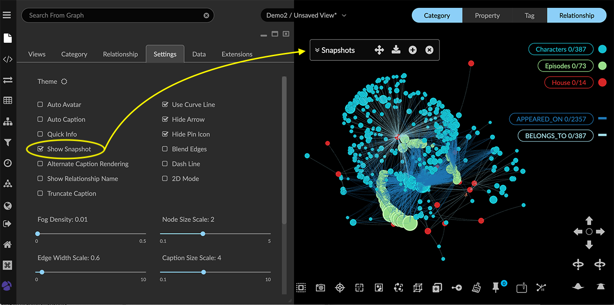

Saving Snapshots Snapshots provide a way save up to ten (10) graph states in memory, and re-load any of them during a working session. This is useful for pursuing different lines of investigation from a given starting point, or for saving a variety of layouts. Unlike saved data views, snapshots cannot be directly shared. The Snapshots pane floats conveniently in the graph space. You can move it anywhere in the space, and take a snapshot at any time without opening a special panel. Icons on the Snapshots title bar let you create and save your snapshots in a single click. The expanded Snapshots window displays thumbnail previews of each snapshot. Each snapshot includes a number, thumbnail, timestamp, and a Note field where you can add descriptive text. You can: Click Create Snapshot to add to your set. Click Save Snapshots to download the entire set as a snapshot archive. Click a snapshot Trash can icon to delete the snapshot. Click a snapshot Cloud icon to load the snapshot. Edit a snapshot description in its Note field. When you exit the project or log out, snapshots are deleted. Before exiting the project space, use Save Snapshots or the icon on the snapshot bar to export a snapshot archive to your local system. Creating a Snapshot To create a snapshot: Go to the Settings tab in the Project panel, and click the Show Snapshot checkbox. The title bar for the Snapshots window appears at the top right, near the Legend.  Click the + (plus) icon in the title bar to take a snapshot. A message indicates that an nth snapshot has been successfully taken. The new snapshot is added to the top of the snapshot list. Click the arrows next to the Snapshots title to expand the window and display your snapshots. Saving a Snapshot Archive You can save your collection of snapshots at any time. Doing so exports a compressed archive (.ZIP) file to your local system that contains each snapshot currently in the set. You can then re-load the entire archived set by drag and drop. A snapshot archive is named Kineviz-graphxr-snapshots , with a YYYY-MM-DD HH-MM-SS timestamp and a .graphxrsnapshots extension, for example: + Kineviz-graphxr-snapshots 2024-07-17 10-27-46.graphxrsnapshots Be sure to save current snapshots before you import a different archive, because the imported archive replaces the current set. To save a snapshot archive: Click Save Snapshots, or its icon on the snapshot bar. GraphXR saves the set of snapshots to a file labeled as Kineviz-graphxr-snapshots YYYY-MM-DD HH-MM-SS.graphxrsnapshots. Loading a Snapshot Loading a snapshot restores that state of the graph-- both the graph data and its layout. You can load any snapshot from the current Snapshots window. The snapshot replaces the current data, and importing an archive by drag and drop replaces the current set of Snapshots. Be sure to: Save a snapshot or view of current data if you want to preserve it. Save (download) the current set of snapshots before importing a downloaded archive. To load a snapshot: Save a view of current data that you want to preserve. Either save a snapshot, or if a named view is open, use Save or Save As on the View tab or view menu to save it. In the view menu choose New to clear the current data and create a new Unsaved View. Now open the Snapshots pane and locate the snapshot you want to load. Click the snapshot’s Cloud icon to load it. The snapshot is loaded to the project space. If desired, go to the view menu or Views tab and choose Save As to save the data as a view. Enter a name for the view, and click Submit. The creation date for an unsaved view (including those imported from a snapshot or GXRF file) is the current date-time. Optionally, you can click the new view’s Remark icon to include more details about the history of the imported file.